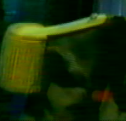
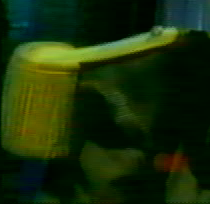

|
Video: filtry prokládání 1.Pøedmluva Tato kategorie filtrù pracuje s prokládaným obrazem. 2.Filtry prokládání
Port filtru Smart Deinterlacer od Donalda Grafta do YV12. Detekuje jestli je obraz prokládaný a prolne prokládané èásti. Má dva parametry: Port filtru Donalda Grafta z programu AviSynth, více na www.neuron2.net. Je velmi úèinný. Tento filtr vezme pùlsnímek z obrazu a druhý pùlsnímek z dal¹ího. Øada filmù (i nìkterá DVD) má tento druh prokládání. Neprovádí ¾ádnou kontrolu èi detekci, tak¾e jej aktivujte, podívejte se na náhled, a jste-li spokojeni s výsledkem, mù¾ete jej pou¾ít. Mix dvou pøedchozích filtrù. Analyzuje aktuální snímek a snímek s PAL Shiftem, vybere ten ménì prokládaný a na nìj aplikuje Smart Deinterlace. Nebere v potaz barevnou slo¾ku, tak¾e v ní mù¾e dojít k men¹ím chybám. Je trochu pomalý, ale pøi správném typu videa velmi úèinný. Mù¾e se pou¾ít i jako jednoduchý IVTC, proto¾e zrekonstruuje progresivní snímky, ale ponechá 30 snímkù za sekundu, neodstraní duplikáty k dosa¾ení 24 fps. Tento filtr napsal Ron Reithoffer. Pokud je pùlsnímek pøíli¹ odli¹ný od sousedních v prostoru/èase (výpadky na VHS), je zahozen a nahrazen prùmìrem z pøedchozího a následujícího øádku snímku. Podle autora musí být tento filtr první v poøadí, a nefunguje moc dobøe s hodnì prokládaným obrazem.
K pøevodu filmu (24 fps) do NTSC (30 fps) se nìkdy pou¾ívá proces zvaný telecine. Duplikuje pùlsnímky k pøidání pátého snímku. 1 2 3 4 => 1 2 2 3 4 1 2 3 4 => 1 2 3 3 4 Pokud mo¾no, je v¾dy mnohem lep¹í získat pùvodní neprokládaný obraz, proto¾e je vhodnìj¹í ke kódování a taky lépe komprimovatelný. Tento filtr pou¾ívá metodu hrubé síly k získání pùvodních snímkù. "Poèítá" prokládané artefakty v obrázcích, a pokud jsou dva obrázky nejvíce prokládané a následují po sobì, pova¾uje je za kandidáty. Momentálnì nesmí být první obrázek prokládaný (zkontrolujte v náhledu!), jinak by identifikace snímkù s telecine selhala. Je to velmi nevyzrálý filtr, varoval jsem vás. Tento filtr je doèasnì skrytý. Toto je port IVTC filtru Richarda Felkera z programu MPlayer. Je v rané fázi (Avidemux a MPlayer jsou trochu odli¹né programy) a èas od èasu se vám mohou objevovat prokládané snímky. Jinak funguje velice pìknì. Tento filtr zkonvertuje video ze 24 fps na 30 fps duplikací pùlsnímkù. Mù¾e se hodit pro DVD pøehrávaèe, které si neporadí dobøe s VCD na 24 fps. 3.Pùlsnímkové filtry U zachytávacích karet a software velmi èasto narazíte na pøehozené pùlsnímky. Vypadá to jako prokládání, ale je v celém obraze, ne jen v pohybujících se èástech. Tento filtr je prohodí zpátky. Tady je krátký pøíklad, nejdøíve obrázek s prohozenými pùlsnímky: A výstup filtru SwapFields: Také je bì¾né, ¾e nahrávací karta/software nìkolikrát pùlsnímky prohodí. Tento filtr se sna¾í detekovat jestli jsou pùlsnímky prohozené, a pokud ano, prohodí je zpátky. Obvykle je lep¹í pou¾ívat tento filtr ne¾ SwapFields. Tento filtr ponechá sudé pùlsnímky, tj. sudé øádky. Svislé rozli¹ení se zmen¹í na polovinu. Toté¾ jako pøedchozí, liché pùlsnímky Oddìlí od sebe pùlsnímky rozdìlením obrazu na dva, z nich¾ ka¾dý je tvoøen jedním pùlsnímkem. Tak¾e se zdvojnásobí snímková frekvence, poèet snímkù bude dvojnásobný a vertikální rozli¹ení polovièní. Opak pøedchozího filtru. |